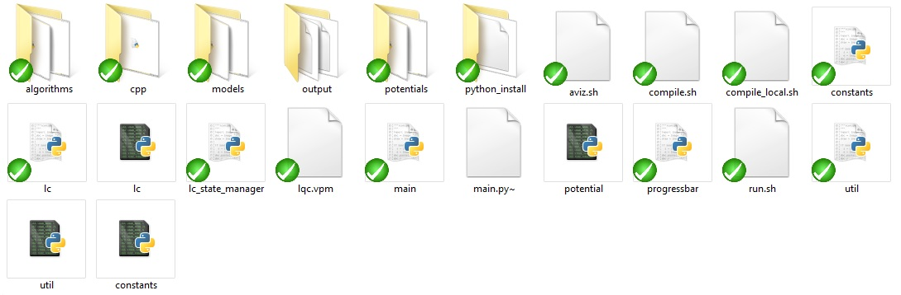

Manual Instructions
How to run the system:
To run the system you only need to go to the main project library, then write in the shell- "./run.sh MODEL_NAME",
where MODEL_NAME should be the name of the model you use (if you don't write anything it will use the default model).
you can choose- "fixed" , "sphere" , "default" or add another model as explained below in "How to write a configuration file" section.
you should not write "MODEL_NAME.py"! The system know to take it from models library automatically.
After running the system you can see the visual result by running "./aviz.sh OUTPUT_PATH".
where OUTPUT_PATH should be the name of the aviz output as in the configuration file.
General structure and main components:

lc.py - This class represents the system that we are working with
It holds the positions and angles of molecules in a liquid crystal, and can
perform a Monte Carlo Metropolis cooling of the liquid crystal.
Algorithms:
We have
- cooling algorithm
- heating algorithm
both use Monte Carlo method.
Models:
We have
you can also add another one as written below in "How to add a configuration file".
Potentials:
We have
- FixedNearestNeighboursPotential approximation
- "SphereNearestNeighboursPotential" approximation
the potentials - - "GayBernesPotential"
- "LenardJonesPotential"
you can also add another one as written below in "How to add new potential".
Output:
Contains the output files to Aviz and graphs.
How to write a configuration file:
First of all you should go to the library "models", then you can copy the content of the configuration file "default.py" and name your file as you wish (with the end of .py of course)
Now you only need to change the parameters in your file, so it would be like the system you are willing to get.
more explanations for some system parameters:
DIMENSIONS = [number of spins in x direction, number of spins in y direction, number of spins in z direction]
INITIAL_SPACING = [The spacing between spin locations in x direction, The spacing between spin locations in y direction , The spacing between spin locations in z direction]
INITIAL_SPIN_ORIENTATION = [The initial spin orientation vector in x direction , The initial spin orientation vector in y direction , The initial spin orientation vector in z direction]
There are more parameters you can change but everything is explained in the file itself as well.
You can change all the potential parameter-  ,
, ,
, ,
, ,
,
POTENTIAL = name of the potential approximation you want to use, your can choose-"FixedNearestNeighboursPotential" , "SphereNearestNeighboursPotential" , or add a new potential as explained below in "How to add new potential section".
TWO_SPINS_POTENTIAL= "GayBernesPotential" , "LenardJonesPotential" , or add a new potential as explained below in "How to add new potential section".
you should only write the name of the potential as in the potential file, with out an ending.
You can also change the Cooling and Heating Algorithms properties such as The standard deviation of the gaussian random spacing in the system.
the standard deviation of the Gaussian random spin orientation,
the number of Metropolis steps to perform in each step.
the number of steps in the cooling process to wait if there is no improvement before lowering the temperature further, the temperatures to use in the Monte Carlo algorithm,
the path to which to output the AVIZ files.
you should only change the values and nothing else!
How to add new potential:
First of all you should go to the library "potentials", then you should copy the content of the file "potential.py" and name your file as you wish (with the end of .py of course)
The next step is to change the class name:
- if you want to add a new type of approximation you can delete everything under "TwoSpinsPotential" and change the name of Potential to the new approximation.
- if you want to add a new potential you can delete everything between "Potential" and "TwoSpinsPotential" and change the name of TwoSpinsPotential to the new potential.
now you need to write how the calculation code.
the last thing is to write the name of the new potential in the configuration file. (you can read more about how to create a new configuration file above.)